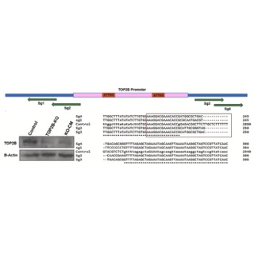
Deletion of TOP2B Promoter using CRISPR-Cas9 induces Senescence in HEK 293T Cells
Neha S., Harshitha G.V., Kiran S., Pankaj Singh Dholaniya
Biochemistry and Biophysics Reports · 2026 (Just accepted)
DOI in press
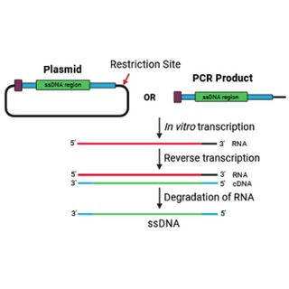
Strategies and Considerations for the Generation of ssDNA-Based HDR Templates for CRISPR-based Genome Editing
Harshitha G.V., Ghosh A., Singh S., Kiran S.*
BMC Genomics, 27:245 · 2026
Link to the article →
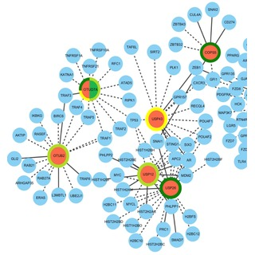
Deubiquitinases as Prognostic Biomarker and Potential Drug Target for Gynecological Cancers
Kondapally M., Dey A., Matta A., Harshitha G.V., Kiran M.*, Kiran S.*
International Journal of Clinical Oncology · 2025
Link to the article →
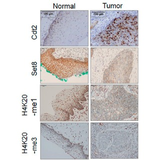
HPV E6–USP46 Mediated Cdt2 Stabilization Reduces Set8 Mediated H4K20-Methylation to Induce Gene Expression Changes
Kiran S.*, Wilson B., Saha S., Julia, Anindya Dutta
Cancers, 14:30, pp. 1–19 · 2022
Link to the article →
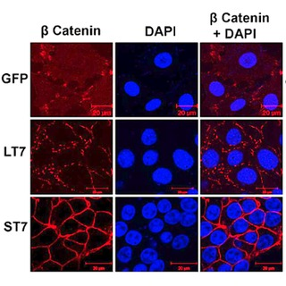
Sirtuin 7 Promotes Mesenchymal to Epithelial Transition by β-catenin Redistribution and Stabilization
Kiran S.*, Kiran M., Ramakrishna G.
Frontiers in Oncology · 2020
Link to the article →
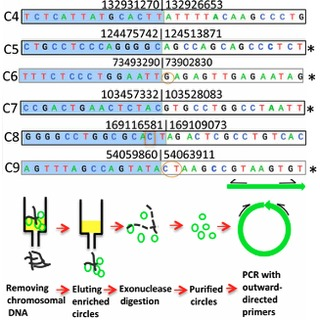
ATAC-seq Identifies Thousands of Extrachromosomal Circular DNA in Cancers and Cell Lines
Kumar P., Kiran S., Saha S., Su Z., Paulsen T., Chatrath A., Shibata Y., Shibata E., Dutta A.
Science Advances, 6:eaba2489 · 2020
Link to the article →
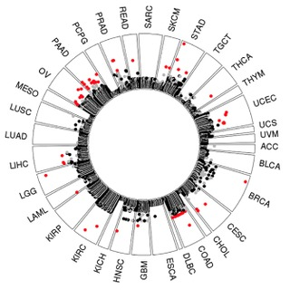
The Pan-Cancer Landscape of Prognostic Germline Variants in 10,582 Patients
Chatrath A., Przanowska R., Kiran S., Su Z., Saha S., Wilson B., Tsunematsu T., Ahn J., Lee K., Paulsen T., Sobierajska E., Kiran M., Tang X., Li T., Kumar P., Ratan A. & Dutta A.
Genome Medicine, 12:15, pp. 1–18 · 2020
Link to the article →
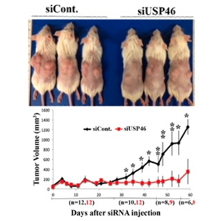
The Deubiquitinase USP46 Is Essential for Proliferation and Tumor Growth of HPV-Transformed Cancers
Kiran S., Dar A., Singh S.K., Lee K.Y. & Dutta A.
Molecular Cell, 72:823–835.e5 · 2018
Link to the article →
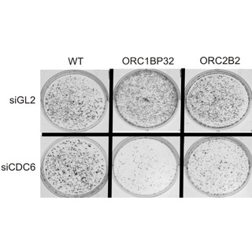
Two Subunits of Human ORC Are Dispensable for DNA Replication and Proliferation
Shibata E., Kiran M., Shibata Y., Singh S., Kiran S. & Dutta A.
eLife, 5:e19084 · 2016
Link to the article →
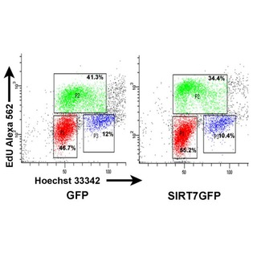
Sirtuin 7 Promotes Cellular Survival following Genomic Stress by Attenuation of DNA Damage, SAPK Activation and p53 Response
Kiran S., Oddi V. & Ramakrishna G.
Experimental Cell Research, 331:123–141 · 2015
Link to the article →
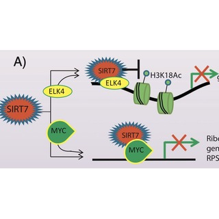
Sirtuin 7 in Cell Proliferation, Stress and Disease: Rise of the Seventh Sirtuin!
Kiran S.*, Anwar T., Kiran M. & Ramakrishna G.
Cellular Signalling, 27:673–682 · 2015
Link to the article →
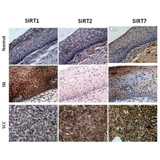
Expression/Localization Patterns of Sirtuins (SIRT1, SIRT2, and SIRT7) during Progression of Cervical Cancer and Effects of Sirtuin Inhibitors on Growth of Cervical Cancer Cells
Singh S., Kumar P.U., Thakur S., Kiran S., Sen B., Sharma S., Rao V.V., Poongothai A.R. & Ramakrishna G.
Tumor Biology, 36:6159–6171 · 2015
Link to the article →
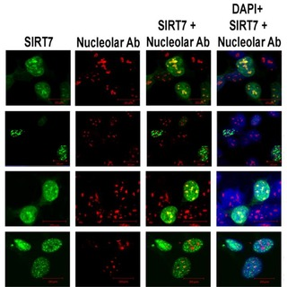
Intracellular Distribution of Human SIRT7 and Mapping of the Nuclear/Nucleolar Localization Signal
Kiran S., Chatterjee N., Singh S., Kaul S.C., Wadhwa R. & Ramakrishna G.
FEBS Journal, 280:3451–3466 · 2013
Link to the article →
Isolation of Salmonella typhimurium and Detection of Virulence Contributing Genes from Water of River Ganges
Saxena M.K., Singh R., Yadav A., Kiran S., Saxena A. & Lakhchura B.D.
Asian Journal of Water, Environment and Pollution, 10-1:141–147 · 2013
Link to the article →
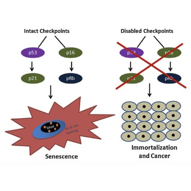
Role of Cellular Senescence in Hepatic Wound Healing and Carcinogenesis
Ramakrishna G., Anwar T., Angara R.K., Chatterjee N., Kiran S. & Singh S.
European Journal of Cell Biology, 91-10:739–747 · 2012
Link to the article →
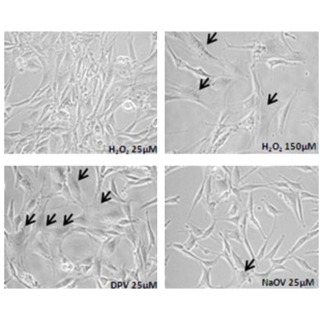
Diperoxovanadate Can Substitute for H₂O₂ at Much Lower Concentration in Inducing Features of Premature Cellular Senescence in Mouse Fibroblasts (NIH3T3)
Chatterjee N., Kiran S., Ram B.M., Islam N., Ramasarma T. & Ramakrishna G.
Mechanisms of Ageing and Development, 132:230–239 · 2011
Link to the article →